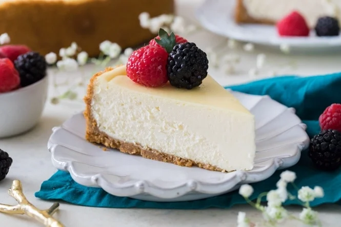

Cheesecake Recipe

Today I’m so excited to show you how to make the best Cheesecake Recipe of your life. Simple, classic, and no water bath required!! The texture is smooth, rich, and creamy, served over a crisp homemade graham cracker crust.
Ingredients
Graham Cracker Crust
- 1 ½ cups graham cracker crumbs (170g)
- 2 Tablespoons sugar
- 1 Tablespoon brown sugar (can substitute white)
- 7 Tablespoons butter, melted
Cheesecake
- 32 oz cream cheese², softened to room temperature (910g)
- 1 cup sugar (200g)
- ⅔ cups sour cream (160g)
- 1 ½ teaspoons vanilla extract
- ⅛ teaspoon salt
- 4 large eggs, room temperature, lightly beaten
Recommended Equipment
- 9" Springform pan
- Mixing bowls
The Steps!
Instructions
- Preheat oven to 325°F (160°C).
- Prepare Graham Cracker crust first by combining graham cracker crumbs, sugar, and brown sugar, and stirring
well. Add melted butter and use a fork to combine ingredients well.
- 1 ½ cups graham cracker crumbs
- 2 Tablespoons sugar
- 1 Tablespoon brown sugar
- 7 Tablespoons butter
- Pour crumbs into a 9” Springform pan and press firmly into the bottom and up the sides of your pan. Set aside.
- In the bowl of a stand mixer or in a large bowl (using a hand mixer), add cream cheese and stir until smooth and
creamy (don’t over-beat or you’ll incorporate too much air).
- Add sugar and stir again until creamy.
- Add sour cream, vanilla extract, and salt, and stir until well-combined. Pause periodically to scrape the bowl
so all ingredients are evenly incorporated.
- ⅔ cups sour cream
- 1 ½ teaspoons vanilla extract
- ⅛ teaspoon salt
- With mixer on low speed, gradually add lightly beaten eggs, one at a time, stirring just until each egg is
incorporated. Scrape the bowl again to ensure everything is combined.
- Pour cheesecake batter into prepared springform pan. To ensure against leaks, place the pan on a foil-lined
cookie sheet.
- Transfer to the center rack of your oven and bake at 325°F (160°C) for 50–60 minutes (or longer if needed).
Edges will puff and lightly brown, center should jiggle slightly but spring back to the touch.
- Remove from oven and let cool on top of the oven⁴ for 10 minutes. Use a knife to loosen the crust from the pan
sides to help prevent cracks. Do not remove the springform ring.
- Let cheesecake cool for another 1–2 hours or until near room temperature. Then refrigerate overnight or for at
least 6 hours. Remove the ring just before serving. Enjoy!
Homepage